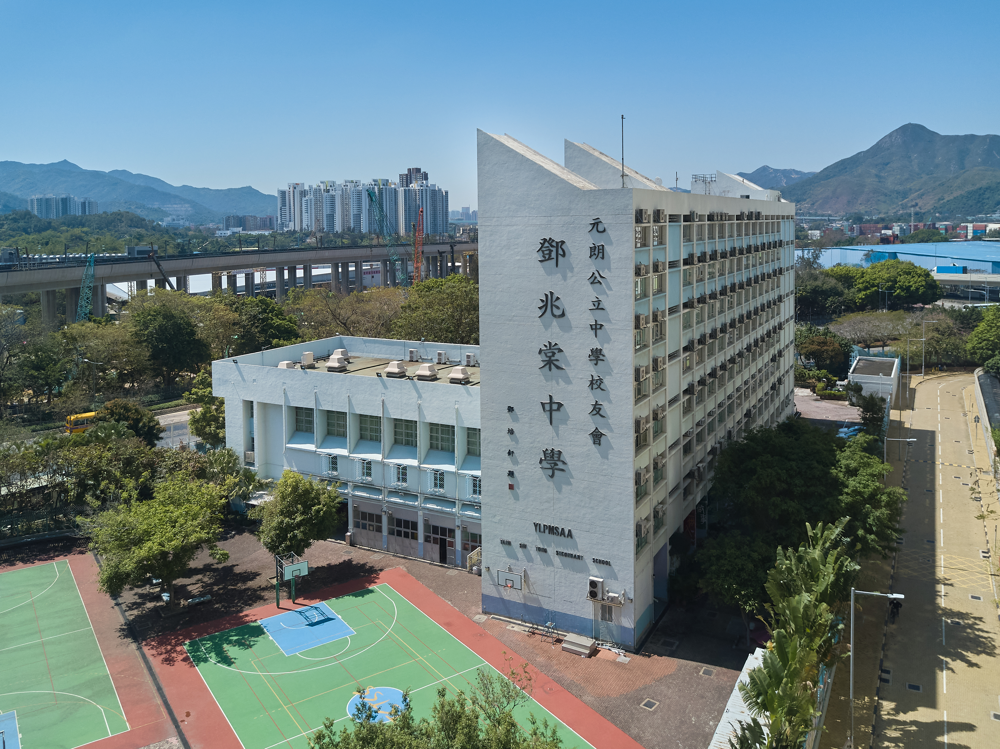

FIG. 001UNIFORM STUDY
OBSERVATION · YOUTH · UNIFORM · LIGHT · OBSERVATION · YOUTH · UNIFORM · LIGHT ·
THE COLLECTIONS
校服分輯
每一輯是一套制服語言。
以主觀評分，留下當下的感受。
ABOUT THIS ARCHIVE02 / 03
先是青春，
才是影像。
本網站只展示真實學生妹的影像。所有拍攝對象均為學生妹。
ALL SUBJECTS ARE STUDENT
© 2026 CAMPUS ARCHIVE